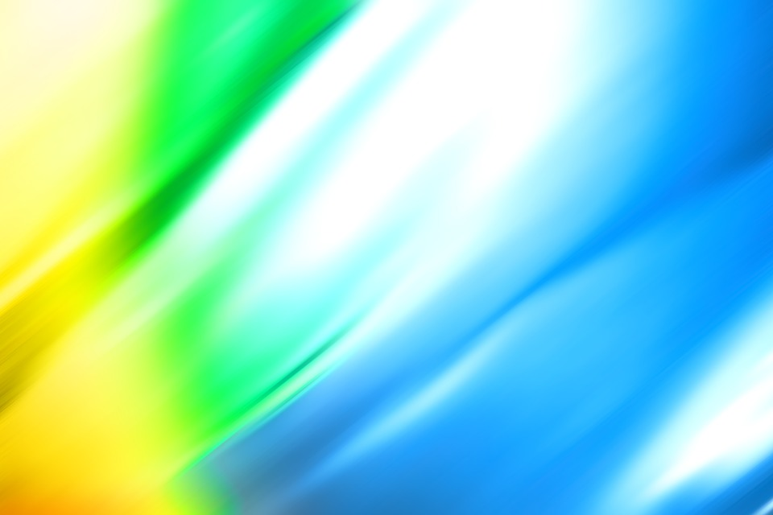

Adam Simpson
Your body can do more than what you think it can do
My favorite color is light blue. It's the perfect color. You see it all the time, such as when you look at the sky or at clear water. It's just a happy color. I also like light green for almost the same reasons. Green and blue go together so well. I also like dark yellow because of the vibe I get from it. It makes more happy and energetic. I feel more connected to nature with these three colors.
